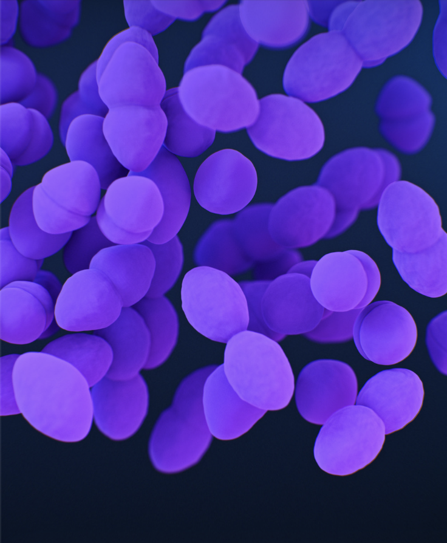

A physician (MBChB, U.S. M.D. Equivalent) and Emory quantitative biostatistician (MPH). I design software and data pipelines that respect the harsh constraints of clinical triage and low-connectivity health systems.
Dauphine Ayebale
MBChB • Emory MPH Quantitative Methods '26
Addressing the 100% unannounced emergency transfer crisis in low-resource clinics. Built with offline-first tablet SQLite caching, ICD-11 standardized clinical fields, and asynchronous HL7/FHIR cloud handshakes.
Direct capture of vitals, GCS, blood sugar, and ICD-11 diagnostic classifications with local caching.
One-click transfer to Regional Referral Hospitals, eliminating missing paper forms.
Confirmation timestamping by receiving teams, targeting >60% loop closure rate (baseline 0%).
Physician rotations across Internal Medicine, General Surgery, Pediatrics, and OB/GYN. Direct stewardship of over 2,500 patient encounters, standardizing acute digital intake tools to drop diagnostic delays by 25%.
Rollins School of Public Health (Emory University). Multivariable causal inference, survey-weighted logistic regressions on NHANES population data (n=3,278), and national vaccine delivery cold-chain routing strategies.

Digital Health SystemsEngineering zero-licensing health software, HL7/FHIR interoperability models, and scaling enterprise knowledge hubs across 10 global offices for over 10,000 active frontline personnel.
Scoped and validated an MVP for an open-source, HL7/FHIR-compliant referral EHR (4M+ catchment). Designed a 4-step intake-to-dispatch workflow on zero-licensing, offline-first Android tablets.
Standardized digital case intake tools across 3 clinical wards. Parsed 3,500+ records with 100% compliance on statutory disease reporting and led QI teams to lower diagnostic errors.
Engineered 3 nested, survey-weighted multivariable logistic regression models in SAS on NHANES data (n=3,278), isolating undiagnosed hypertension risk factors to inform clinical screening thresholds.
Architected the centralized "Flourish" knowledge hub across 10 global field offices. Scaled mobile TaroWorks/Salesforce data collection workflows to 10,000+ frontline users.
Living Water International • Stafford, TX (Remote)
Emory University, Rollins School of Public Health
Global Health — Quantitative Methods & Biostatistical Methodology
Kitante Medical Center • Kampala, Uganda
Kampala International University • U.S. M.D. Equivalent